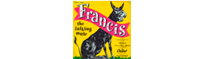

La ciencia de la Mula Francis es uno de los mejores blogs sobre noticias de ciencia muy actualizado. Realizado por Francis Villatoro (@emulenews) es de bastante nivel y es posible que en ocasiones no quede claro para alguien de bachillerato, pero merece la pena el esfuerzo de tratar de entenderlo.
